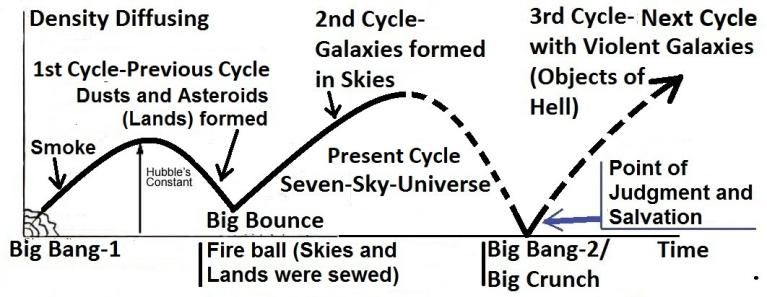

A bird flies in the air by spreading and folding its wings. But, it would be weightless and off-balanced if it were not held by gravity through its center of gravity (CG). The holding of birds by gravity is expressed in above verses as the act of Allah, and Allah only. Allah not only holds the birds, He drives the astral objects too. The following verse talks about the act:
একটি পাখি তার ডানা ছড়িয়ে এবং ভাঁজ করে বাতাসে উড়ে। কিন্তু, এটি ওজনহীন এবং ভারসাম্যহীন হবে যদি এটি মাধ্যাকর্ষণ কেন্দ্রের (CG) মাধ্যমে মাধ্যাকর্ষণ দ্বারা ধরে না থাকে। মাধ্যাকর্ষণ দ্বারা পাখিদের ধারণ করাকে উপরোক্ত আয়াতে আল্লাহ এবং একমাত্র আল্লাহর কাজ হিসেবে প্রকাশ করা হয়েছে। আল্লাহ শুধু পাখিদেরই ধারণ করেন না, তিনি সূক্ষ্ম বস্তুকেও চালান। নিম্নোক্ত আয়াতটি কাজ সম্পর্কে কথা বলে:
―He covers the night with the day, seeking it rapidly, and the sun and the moon and the stars controlled by His deed.‖ [Al Quran 7:54] Allah holds the birds. He covers the night with the day (rotates the Earth). He drives the astral objects, like the stars. So, the gravitational force is a force of Allah. A force field in a living being (Allah) should be called soul. So, the Gravitational Force Field is an elementary soul (ruh) of His nafs (composite soul), permeating His body in form. The force is extended through the hands of His nafs to hold the deposits of matter in the space. The force exposes significantly through the large deposits of matter, and we find that the Earth is holding the birds. Actually, it is Allah Who is holding the birds through the Earth. He is the Sustainer. The whole universe is on the palm of His right hand (hand of nafs). A soul should act on the minute-to-minute wills of its owner. However, Allah has designed the extended force field by His will-power to act in fixed patterns. Therefore, we perceive its actions as fixed natural laws (such as the laws of gravity). Nonetheless, He is always in control. According to the following verse, Allah extended and infused the gravitational force field into the single-sky- universe of the preceding cycle (first cycle):
"তিনি রাতকে দিনের দ্বারা ঢেকে দেন, দ্রুততার সাথে তালাশ করেন এবং সূর্য, চন্দ্র ও নক্ষত্রগুলিকে তাঁর কর্ম দ্বারা নিয়ন্ত্রিত করেন।" [আল কুরআন 7:54] আল্লাহ পাখিদের ধারণ করেন। তিনি রাতকে দিন দিয়ে ঢেকে দেন (পৃথিবীকে ঘোরেন)। তিনি নক্ষত্রের মতো জ্যোতিষ বস্তুকে চালিত করেন। সুতরাং, মহাকর্ষ শক্তি আল্লাহর একটি শক্তি। জীবের (আল্লাহ) একটি শক্তি ক্ষেত্রকে আত্মা বলা উচিত। সুতরাং, মহাকর্ষীয় বল ক্ষেত্র হল তাঁর নফসের (যৌগিক আত্মা) একটি প্রাথমিক আত্মা (রুহ), যা তাঁর দেহের আকারে বিস্তৃত। মহাশূন্যে পদার্থের আমানত ধরে রাখার জন্য তাঁর নফসের হাত দিয়ে শক্তি প্রসারিত হয়। শক্তি বস্তুর বৃহৎ আমানতের মাধ্যমে উল্লেখযোগ্যভাবে উদ্ভাসিত হয় এবং আমরা দেখতে পাই যে পৃথিবী পাখিদের ধরে রেখেছে। প্রকৃতপক্ষে, আল্লাহ পাখীকে পৃথিবীর মধ্যে ধারণ করেন। তিনিই রক্ষণাবেক্ষণকারী। সমগ্র মহাবিশ্ব তাঁর ডান হাতের তালুতে (নফসের হাত)। একটি আত্মা তার মালিকের মিনিট থেকে মিনিটের ইচ্ছা অনুযায়ী কাজ করা উচিত. যাইহোক, আল্লাহ নির্দিষ্ট প্যাটার্নে কাজ করার জন্য তাঁর ইচ্ছাশক্তির দ্বারা বর্ধিত বল ক্ষেত্রটি ডিজাইন করেছেন। অতএব, আমরা এর ক্রিয়াগুলিকে স্থির প্রাকৃতিক নিয়ম হিসাবে উপলব্ধি করি (যেমন মহাকর্ষের সূত্র)। তবুও, তিনি সর্বদা নিয়ন্ত্রণে আছেন। নিম্নলিখিত আয়াত অনুসারে, আল্লাহ মহাকর্ষ বল ক্ষেত্রকে পূর্ববর্তী চক্রের (প্রথম চক্র) একক-আকাশ-মহাবিশ্বে প্রসারিত ও সংযোজন করেছেন:
―(Thumma istawa) Moreover, extended and infused His force (gravitational force) into the Sky (ila i-samai / into the single-sky-universe of the first / preceding cycle) while it had been smoke…‖ [Al Quran 41:11-12]
-(থুম্মা ইস্তাওয়া) তাছাড়া, তার বল (মাধ্যাকর্ষণ শক্তি)কে আকাশে (ইলা ই-সামাই/প্রথম/পূর্ববর্তী চক্রের একক-আকাশ-মহাবিশ্বে) প্রসারিত ও সংযোজিত করেছে যখন এটি ধোঁয়ায় ছিল...'' [আল কুরআন 41:11-12]
The single-sky-universe of the first cycle was full of smoke (hydrogen and helium mainly). After Allah had infused the gravitational force, it produced heavier elements, at least up to silicon. The heavier elements can form in the deposits of gases, such as hydrogen and helium, due to fusion reaction, driven by immense pressure and temperature resulting from gravitational contraction. The process is deliberately discussed in Section-7 of Chater-2. The heavier elements formed dusts and asteroids that are called lands (ard) in the next part of the verses:
প্রথম চক্রের একক-আকাশ-মহাবিশ্ব ধোঁয়ায় পূর্ণ ছিল (প্রধানত হাইড্রোজেন এবং হিলিয়াম)। আল্লাহ মাধ্যাকর্ষণ শক্তি যোগ করার পরে, এটি অন্তত সিলিকন পর্যন্ত ভারী উপাদান তৈরি করেছিল। ভারি উপাদানগুলি হাইড্রোজেন এবং হিলিয়ামের মতো গ্যাসের জমায় তৈরি করতে পারে, ফিউশন প্রতিক্রিয়ার কারণে, মহাকর্ষীয় সংকোচনের ফলে প্রচুর চাপ এবং তাপমাত্রা দ্বারা চালিত হয়। প্রক্রিয়াটি ইচ্ছাকৃতভাবে চ্যাটার-2 এর ধারা-7 এ আলোচনা করা হয়েছে। ভারী উপাদানগুলি ধূলিকণা এবং গ্রহাণু তৈরি করেছিল যেগুলিকে আয়াতের পরবর্তী অংশে ভূমি (আর্ড) বলা হয়েছে:
―…He said to it (smoke) and to the lands (dusts and asteroids), ―Come ye together, willingly or unwillingly‖. They said, ―We do come in willing obedience (thus, the universe contracted rapidly and the Big Bounce occurred)...‖ [Al Quran 41: 11-12]
তিনি এটিকে (ধোঁয়া) এবং ভূমিকে (ধুলো এবং গ্রহাণু) বললেন, "তোমরা একত্র হও, ইচ্ছায় বা অনিচ্ছায়"। তারা বলেছিল, "আমরা স্বেচ্ছায় আনুগত্য নিয়ে এসেছি (এভাবে, মহাবিশ্ব দ্রুত সংকুচিত হয়েছে এবং বিগ বাউন্স ঘটেছে)..." [আল কুরআন 41: 11-12]
On the command of, ―Come ye together, willingly or unwillingly‖ the universe began contracting rapidly. Due to extreme pressure and temperature of contraction, the universe re-started expansion from a Big Bounce when Allah redesigned the universe as a seven-sky-universe, and the present cycle began. It is said in the next part of the verses:
"স্বেচ্ছায় হোক বা অনিচ্ছায় তোমরা একত্র হও" এই আদেশে মহাবিশ্ব দ্রুত সংকুচিত হতে শুরু করে। প্রচন্ড চাপ এবং তাপমাত্রার সংকোচনের কারণে, মহাবিশ্ব একটি বিগ বাউন্স থেকে পুনরায় সম্প্রসারণ শুরু করে যখন আল্লাহ মহাবিশ্বকে সাত-আকাশ-মহাবিশ্ব হিসাবে পুনরায় ডিজাইন করেন এবং বর্তমান চক্র শুরু হয়। আয়াতের পরবর্তী অংশে বলা হয়েছে:
―…So, He completed them as Seven Skies in two days (seven-sky-universe of the present cycle began) and inspired in each sky its affairs. And We adorned the sky of the Earth with lights, and with guard. Such is the Decree of the Exalted in Might, Full of Knowledge.‖ [Al Quran 41: 11-12] FIGURE 1.11: The Quran‘s Model of Cyclic Universe

চিত্র 1_11 / Figure 1_11
-...সুতরাং, তিনি সেগুলোকে সাত আসমান হিসেবে দুই দিনে সম্পন্ন করেছেন (বর্তমান চক্রের সাত-আকাশ-মহাবিশ্ব শুরু হয়েছে) এবং প্রতিটি আকাশে তার বিষয়গুলো অনুপ্রাণিত করেছেন। আর আমি পৃথিবীর আকাশকে আলোকসজ্জা ও পাহারায় সুশোভিত করেছি। এটি হল পরাক্রমশালী, জ্ঞানে পরিপূর্ণ মহানের আদেশ।'' [আল কুরআন 41: 11-12] চিত্র 1.11: সাইক্লিক ইউনিভার্সের কুরআনের মডেল।
চিত্র 1_11 / Figure 1_11
The same description is given in the following verse as well:
নিম্নোক্ত আয়াতেও একই বর্ণনা দেওয়া হয়েছে:
"He the One Who created for you what was in the assembly of lands (in the contracted universe of the preceding cycle). Moreover, extended and infused (thumma istawa) His force (gravitational force field) into the Sky and fashioned them into Seven Skies, and He of everything is All- Knowing." [Al Quran 2:29]
"তিনিই তোমাদের জন্য সৃষ্টি করেছেন যা কিছু জমির সমাবেশে (পূর্ববর্তী চক্রের সংকুচিত মহাবিশ্বে)। তাছাড়া, আকাশে তাঁর বল (মধ্যাকর্ষণ বল ক্ষেত্র) প্রসারিত ও সংমিশ্রিত করেছেন এবং সেগুলিকে সাত আকাশে রূপ দিয়েছেন এবং তিনি সবকিছু সম্পর্কে সর্বজ্ঞ।" [আল কুরআন 2:29]
There are seven skies in the universe. Each sky contains many galaxies. The skies are formed by the distribution of matter. The distribution of matter has waved the space as seven skies. The skies are super-giant waves of space, one inside another—like the peels of onion. The space, though waved, is continuous [the skies are deliberately discussed in Section-7 of Chapter-2]. So, the gravitational force is not from Nafsin- Wahidatin. It is an elementary soul (force field / ruh) of Allah, which He has extended, designed, and infused into the universes through His hands of nafs.
মহাবিশ্বে সাতটি আকাশ রয়েছে। প্রতিটি আকাশে অনেকগুলো ছায়াপথ রয়েছে। পদার্থের বণ্টনের মাধ্যমে আকাশ গঠিত হয়। পদার্থের বণ্টন মহাকাশকে সাত আকাশের মতো তরঙ্গায়িত করেছে। আকাশগুলো মহাকাশের অতি-দৈত্য ঢেউ, একটার ভিতরে আরেকটা—পেঁয়াজের খোসার মতো। স্থান, যদিও তরঙ্গায়িত, অবিচ্ছিন্ন [আকাশ ইচ্ছাকৃতভাবে অধ্যায়-2 এর ধারা-7 এ আলোচনা করা হয়েছে]। সুতরাং, মহাকর্ষ বল নাফসিন-ওয়াহিদাতিন থেকে নয়। এটি আল্লাহর একটি প্রাথমিক আত্মা (ফোর্স ফিল্ড/রুহ), যা তিনি তাঁর নফসের হাতের মাধ্যমে মহাবিশ্বে প্রসারিত, পরিকল্পিত এবং সংযোজন করেছেন।
6b. Dark Energy
6 খ. ডার্ক এনার্জি
In 1990‘s, the scientists of ―1A Supernova Cosmological Project‖ and ―High-Z Search Team‖ discovered that the rate of expansion of the universe was accelerating over time, rather than slowing down. Thus, the vacuum appears to have an energy density, which is called Dark Energy. The Dark Matter is known by its likely gravitational effect on the matter; and the particles, with which it may be made of, have measurable evidence of its existence. By contrast, the Dark Energy remains in complete mystery. The name Dark Energy refers to the fact that some kind of stuff must fill the vast reaches of mostly empty space in the universe in order to be able to make space accelerate in its expansion. In this sense, the Dark Energy is like a magnetic field working as a repulsive force to accelerate the expansion of the universe. The initial configuration of the universe should have been exceptionally perfect for life to exist. If the density of Dark Energy were slightly higher, the universe would tear apart; if it were lower, the universe would collapse into Singularity long before any form of life had the opportunity to develop. The Quran says that Allah created the Sky with hand (hand of nafs), and He is for the expanders:
1990-এর দশকে, "1A সুপারনোভা কসমোলজিক্যাল প্রজেক্ট" এবং "High-Z সার্চ টিম"-এর বিজ্ঞানীরা আবিষ্কার করেছিলেন যে মহাবিশ্বের সম্প্রসারণের হার সময়ের সাথে সাথে ধীর হওয়ার পরিবর্তে ত্বরান্বিত হচ্ছে। এইভাবে, ভ্যাকুয়ামে শক্তির ঘনত্ব আছে বলে মনে হয়, যাকে ডার্ক এনার্জি বলা হয়। ডার্ক ম্যাটার বিষয়টির উপর সম্ভাব্য মহাকর্ষীয় প্রভাব দ্বারা পরিচিত; এবং কণা, যা দিয়ে এটি তৈরি হতে পারে, তার অস্তিত্বের পরিমাপযোগ্য প্রমাণ রয়েছে। বিপরীতে, ডার্ক এনার্জি সম্পূর্ণ রহস্যে রয়ে গেছে। ডার্ক এনার্জি নামটি এই সত্যটিকে বোঝায় যে মহাবিশ্বের বেশিরভাগ খালি স্থানের বিশাল আধিক্যগুলিকে কিছু ধরণের জিনিসগুলি পূরণ করতে হবে যাতে মহাকাশ এর প্রসারণকে ত্বরান্বিত করতে সক্ষম হয়। এই অর্থে, ডার্ক এনার্জি একটি চৌম্বক ক্ষেত্রের মতো যা মহাবিশ্বের সম্প্রসারণকে ত্বরান্বিত করার জন্য একটি বিকর্ষণকারী শক্তি হিসাবে কাজ করে। মহাবিশ্বের প্রাথমিক কনফিগারেশন জীবনের অস্তিত্বের জন্য ব্যতিক্রমীভাবে নিখুঁত হওয়া উচিত ছিল। ডার্ক এনার্জির ঘনত্ব একটু বেশি হলে মহাবিশ্ব ছিন্নভিন্ন হয়ে যেত; যদি এটি কম হত, তবে মহাবিশ্ব সিঙ্গুলারিটিতে ভেঙে পড়বে যে কোনও ধরণের জীবনের বিকাশের সুযোগ পাওয়ার অনেক আগেই। কুরআন বলে যে আল্লাহ আকাশকে হাতে (নফসের হাত) দিয়ে সৃষ্টি করেছেন এবং তিনি সম্প্রসারণকারীদের জন্য:
―And the Sky, We constructed it with hand (bi- aydin), and Me for expanders‖ [Al Quran 51:47] [In above Verse, ―bi-aydin‖ simply means ―with hand‖, but the word is normally translated with different words to match the common understanding] The above verse is talking about the hand of His nafs, with which the Sky (Universe) is constructed. And, He says, ―…Me for expanders‖. So, the Dark Energy should be a force field (elementary soul / ruh) of His nafs, which He has extended through His hand of nafs to expand the universe. It may be mentioned that the whole universe is in the right hand of His nafs. So, the hands of His nafs comprise the Dark Energy, and He knows how fast the universe should expand.
"এবং আকাশ, আমরা এটি হাতে তৈরি করেছি (বাই-আয়দিন), এবং আমি সম্প্রসারণের জন্য" [আল কুরআন 51:47] [উপরের আয়াতে, "বি-আয়দিন" এর সহজ অর্থ "হাত দিয়ে", তবে শব্দটি সাধারণ বোঝার সাথে মিল করার জন্য সাধারণত বিভিন্ন শব্দ দিয়ে অনুবাদ করা হয়] উপরের আয়াতটি তার হাতের সাথে কথা বলছে (উপরোক্ত আয়াতটি নফনি)। নির্মিত এবং, তিনি বলেছেন, ''...আমি সম্প্রসারণকারীদের জন্য''। সুতরাং, অন্ধকার শক্তি তাঁর নফসের একটি শক্তি ক্ষেত্র (প্রাথমিক আত্মা/রুহ) হওয়া উচিত, যা তিনি মহাবিশ্বকে প্রসারিত করার জন্য তাঁর নফসের হাত দিয়ে প্রসারিত করেছেন। উল্লেখ করা যেতে পারে যে সমগ্র বিশ্বজগৎ তাঁর নফসের ডান হাতে। সুতরাং, তাঁর নফসের হাত অন্ধকার শক্তি নিয়ে গঠিত, এবং তিনি জানেন মহাবিশ্ব কত দ্রুত প্রসারিত হওয়া উচিত।
6c. Vacuum Energy
6 গ. ভ্যাকুয়াম এনার্জি
Scientists predict the presence of ―Vacuum Energy‖ in the space. ―Vacuum Energy is an underlying background energy that exists in space throughout the entire universe‖ – Wikipedia, The Free Encyclopedia. The Vacuum Energy is highly intense (10113 joules per cubic meter), but it is zero in our dimension. It may be the light of Allah, which permeates the entire universe: ―Allah is the light of the 'Skies and Lands' (Samawaat-wal-Ard / this Universe)…‖ [Al Quran 24: 35] So, the hands of His nafs comprise the force field (elementary soul / ruh) holding the light / vacuum energy. The space is constructed with the force fields of His hand (hand of nafs). If the fluctuations in the fields give rise to the vacuum energy, it is His energy. However, His energy cannot bleed through His hand. He provides by breathing out. He provided Nafsin-Wahidatin, from which everything has been created.
বিজ্ঞানীরা মহাকাশে "ভ্যাকুয়াম এনার্জি" এর উপস্থিতির পূর্বাভাস দিয়েছেন। "ভ্যাকুয়াম এনার্জি হল একটি অন্তর্নিহিত পটভূমি শক্তি যা সমগ্র মহাবিশ্ব জুড়ে মহাকাশে বিদ্যমান" - উইকিপিডিয়া, দ্য ফ্রি এনসাইক্লোপিডিয়া। ভ্যাকুয়াম শক্তি অত্যন্ত তীব্র (10113 জুল প্রতি ঘনমিটার), কিন্তু এটি আমাদের মাত্রা শূন্য। এটি আল্লাহর আলো হতে পারে, যা সমগ্র মহাবিশ্বে বিরাজ করছে: ―আল্লাহ হলেন 'আকাশ ও ভূমি' (সামাওয়াত-ওয়াল-আর্দ/এই মহাবিশ্ব)...'' [আল কুরআন 24:35] সুতরাং, তাঁর নফসের হাত শক্তি ক্ষেত্র (প্রাথমিক আত্মা/রুহ) আলোকে ধারণ করে। স্থানটি তাঁর হাতের (নফসের হাত) বল ক্ষেত্র দিয়ে তৈরি করা হয়েছে। ক্ষেত্রগুলির ওঠানামা যদি শূন্য শক্তির জন্ম দেয়, তবে এটি তাঁর শক্তি। যাইহোক, তাঁর শক্তি তাঁর হাত দিয়ে রক্তপাত করতে পারে না। তিনি শ্বাস প্রশ্বাসের মাধ্যমে প্রদান করেন। তিনি নাফসিন-ওয়াহিদাতিন প্রদান করেছেন, যা থেকে সবকিছুর সৃষ্টি হয়েছে।
6d. Quantum Fields
6d. কোয়ান্টাম ক্ষেত্র
His hands of nafs do not comprise only vacuum energy, force of expansion (dark energy), and force of contraction (gravitational force). It comprises other force fields as well, discussed below: The experiment carried out by Alain Aspect and his Team in 1982 provides strong evidence that even at great distances, the entangled subatomic particles remain connected to one another. If two subatomic particles are emitted from the same source, one influences the other instantly, whatever is the distance. So, the modern Quantum Mechanics suggests that the universe is not made of separate elements, but it is an unbroken singular entity. In the Standard Model of particle physics, the masses of all particles are generated as a result of their interactions with a field, detected by CERN‘s Large Hadron Collider. The Higgs Particle, a very unstable particle, gain mass from the field and produce other particles. Scientists think that there are 12 Fields and 4 fundamental forces that produce the universe. The fields are like fluids filling the universe. The associated particles of the fields gain mass from the fields and produce subatomic particles. Ultimately, the fundamental forces such as Magnetic Force Field, Strong Nuclear Force Field, and Weak Nuclear Force Field (except the gravitational force) capture the subatomic particles and produce the atoms.
তার হাতের নফস শুধুমাত্র ভ্যাকুয়াম শক্তি, সম্প্রসারণের শক্তি (অন্ধকার শক্তি), এবং সংকোচনের শক্তি (মাধ্যাকর্ষণ শক্তি) নিয়ে গঠিত নয়। এটি অন্যান্য শক্তি ক্ষেত্রগুলিকেও অন্তর্ভুক্ত করে, নীচে আলোচনা করা হয়েছে: 1982 সালে অ্যালাইন অ্যাসপেক্ট এবং তার দল দ্বারা পরিচালিত পরীক্ষাটি শক্তিশালী প্রমাণ দেয় যে এমনকি অনেক দূরত্বেও, আটকে থাকা সাবটমিক কণাগুলি একে অপরের সাথে সংযুক্ত থাকে। যদি একই উৎস থেকে দুটি উপপারমাণবিক কণা নির্গত হয়, একটি তাৎক্ষণিকভাবে অন্যটিকে প্রভাবিত করে, দূরত্ব যাই হোক না কেন। সুতরাং, আধুনিক কোয়ান্টাম মেকানিক্স পরামর্শ দেয় যে মহাবিশ্ব পৃথক উপাদান দিয়ে তৈরি নয়, এটি একটি অবিচ্ছিন্ন একক সত্তা। কণা পদার্থবিজ্ঞানের স্ট্যান্ডার্ড মডেলে, সমস্ত কণার ভর একটি ক্ষেত্রের সাথে তাদের মিথস্ক্রিয়ার ফলে তৈরি হয়, CERN-এর লার্জ হ্যাড্রন কোলাইডার দ্বারা সনাক্ত করা হয়েছে। হিগস পার্টিকেল, একটি অত্যন্ত অস্থির কণা, ক্ষেত্র থেকে ভর লাভ করে এবং অন্যান্য কণা তৈরি করে। বিজ্ঞানীরা মনে করেন যে 12টি ক্ষেত্র এবং 4টি মৌলিক শক্তি রয়েছে যা মহাবিশ্ব তৈরি করে। ক্ষেত্রগুলি মহাবিশ্বকে ভরা তরলের মতো। ক্ষেত্রগুলির সংশ্লিষ্ট কণাগুলি ক্ষেত্রগুলি থেকে ভর অর্জন করে এবং উপ-পরমাণু কণা তৈরি করে। পরিশেষে, মৌলিক শক্তি যেমন চৌম্বক বল ক্ষেত্র, শক্তিশালী নিউক্লিয়ার ফোর্স ফিল্ড এবং দুর্বল নিউক্লিয়ার ফোর্স ফিল্ড (মহাকর্ষীয় বল ব্যতীত) উপ-পরমাণু কণাগুলিকে ধরে রাখে এবং পরমাণু তৈরি করে।
electron electron neutrino up quark down quark muon muon neutrino strange quark charm quark tau tau neutrino bottom quark top quark
ইলেক্ট্রন ইলেক্ট্রন নিউট্রিনো আপ কোয়ার্ক ডাউন কোয়ার্ক মিউওন নিউট্রিনো অদ্ভুত কোয়ার্ক চার্ম কোয়ার্ক টাউ টাউ নিউট্রিনো নিচের কোয়ার্ক টপ কোয়ার্ক
FIGURE 1.12: Elementary Particles

চিত্র 1_12 / Figure 1_12
চিত্র 1.12: প্রাথমিক কণা
চিত্র 1_12 / Figure 1_12
However, the associated particles do not derive anything from the fields; they gain mass due to their movements through the fields and produce other particles. The fields are extended elementary souls of God. And the associated particles are from the Nafsin-Wahidatin that God provided from Himself to create everything. Thus, one should not mix up a creation with God. The scientists are looking at the above mentioned force fields. There may be more. Allah sees, hears, and knows everything instantly. Finally, there are several theories that attempt to explain the creation of matter. These theories are often grandiose as they endeavor to explain creation without God. Simply put, Allah designed force fields, such as the Magnetic Field and the Strong Nuclear Force Field, by His hand (hand of nafs) to operate within the atom. These force fields captured light (photons) to produce atoms. The Photons captured by Magnetic Fields became electrons, while those captured by Strong Nuclear Force Fields became protons. Thus, the universe is created from ruhs (elementary souls / force fields) and light. 6e. Space and God
যাইহোক, সংশ্লিষ্ট কণা ক্ষেত্র থেকে কিছু আহরণ করে না; তারা ক্ষেত্রগুলির মধ্য দিয়ে চলাচলের কারণে ভর অর্জন করে এবং অন্যান্য কণা তৈরি করে। ক্ষেত্রগুলি ঈশ্বরের বর্ধিত প্রাথমিক আত্মা। আর সংশ্লিষ্ট কণাগুলো হচ্ছে নাফসিন-ওয়াহিদাতিন থেকে যা আল্লাহ সবকিছু সৃষ্টির জন্য নিজের কাছ থেকে দিয়েছেন। তাই সৃষ্টিকর্তার সাথে সৃষ্টিকে মিশ্রিত করা উচিত নয়। বিজ্ঞানীরা উপরে উল্লিখিত বল ক্ষেত্রগুলি দেখছেন। আরও হতে পারে। আল্লাহ তাৎক্ষণিকভাবে সবকিছু দেখেন, শুনেন এবং জানেন। অবশেষে, কিছু তত্ত্ব আছে যা পদার্থের সৃষ্টি ব্যাখ্যা করার চেষ্টা করে। এই তত্ত্বগুলি প্রায়শই মহান হয় কারণ তারা ঈশ্বর ছাড়া সৃষ্টিকে ব্যাখ্যা করার চেষ্টা করে। সহজ কথায়, আল্লাহ পরমাণুর মধ্যে কাজ করার জন্য তার হাতে (নফসের হাত) দ্বারা চৌম্বক ক্ষেত্র এবং শক্তিশালী নিউক্লিয়ার ফোর্স ফিল্ডের মতো বল ক্ষেত্র ডিজাইন করেছেন। এই বল ক্ষেত্রগুলি পরমাণু তৈরি করতে আলো (ফোটন) ধারণ করে। চৌম্বক ক্ষেত্র দ্বারা বন্দী ফোটনগুলি ইলেকট্রনে পরিণত হয়, যখন শক্তিশালী নিউক্লিয়ার ফোর্স ফিল্ড দ্বারা বন্দীকৃত ফোটনগুলি প্রোটনে পরিণত হয়। সুতরাং, মহাবিশ্ব রুহস (প্রাথমিক আত্মা / বল ক্ষেত্র) এবং আলো থেকে সৃষ্টি হয়েছে। 6ই. মহাকাশ এবং ঈশ্বর
Fifteen to twenty force fields, including quantum fields, gravitational force, dark energy / vacuum energy, etc., constitute His hands of nafs. His right hand of nafs constitutes the space of this universe. It is said in the following verse:
কোয়ান্টাম ক্ষেত্র, মহাকর্ষীয় শক্তি, অন্ধকার শক্তি / ভ্যাকুয়াম শক্তি ইত্যাদি সহ পনের থেকে বিশটি বল ক্ষেত্র তাঁর নফসের হাত গঠন করে। তার ডান হাতের নফস এই মহাবিশ্বের স্থান গঠন করে। নিম্নোক্ত আয়াতে বলা হয়েছে:
―And the Sky (space), We constructed it with hand (hand of nafs), and Me for expanders‖ [Al Quran 51:47]
"এবং আকাশ (মহাকাশ), আমরা এটি হাতে (নফসের হাত) দিয়ে তৈরি করেছি এবং আমি সম্প্রসারণের জন্য" [আল কুরআন 51:47]
The above verse is calling the universe sky (singular sky). So, it is talking about the single-sky-universe of the preceding cycle (first cycle). He put a part of Nafsin-Wahidatin in the palm of His right hand (hand of nafs). He transformed the part into smoke (hydrogen and helium mainly including small amounts of Lithium, Beryllium, Boron, and Carbon). The space of the single-sky-universe was uniform and the matter spread evenly throughout the space. Later, He extended gravitational force into the single- sky-universe of the first cycle through His hand of nafs. The gravitational force produced heavier elements at least up to silicon. When the Big Bounce occurred, He organized the universe as Seven Skies by the distribution of matter (smoke, dusts, and asteroids) into the space—the presence of matter waved the space as Seven Skies (seven-sky-universe present cycle). The seven-sky-universe needed the dark energy to expand, which He extended through the same hand of His nafs at the end. He is Sustainer and Evolver from the level of elementary particles. Every inert thing is devotedly obedient to Him. When He decrees a matter, He says to it, "Be", and it is!"
উপরের আয়াতটি মহাবিশ্বকে আকাশ (একবচন আকাশ) বলছে। সুতরাং, এটি পূর্ববর্তী চক্রের (প্রথম চক্র) একক-আকাশ-মহাবিশ্বের কথা বলছে। তিনি নাফসিন-ওয়াহিদাতিনের একটি অংশ তাঁর ডান হাতের তালুতে (নফসের হাত) রাখেন। তিনি অংশটিকে ধোঁয়ায় রূপান্তরিত করেন (হাইড্রোজেন এবং হিলিয়াম প্রধানত অল্প পরিমাণে লিথিয়াম, বেরিলিয়াম, বোরন এবং কার্বন সহ)। একক-আকাশ-মহাবিশ্বের স্থান ছিল অভিন্ন এবং ব্যাপারটি মহাকাশ জুড়ে সমানভাবে ছড়িয়ে পড়ে। পরবর্তীতে, তিনি তাঁর নফসের হাতের মাধ্যমে প্রথম চক্রের একক-আকাশ-মহাবিশ্বে মহাকর্ষ বল প্রসারিত করেন। মহাকর্ষীয় বল অন্তত সিলিকন পর্যন্ত ভারী উপাদান তৈরি করেছে। যখন বিগ বাউন্স ঘটে, তখন তিনি মহাবিশ্বকে মহাকাশে বস্তু (ধোঁয়া, ধূলিকণা এবং গ্রহাণু) বিতরণের মাধ্যমে সাত আকাশ হিসাবে সংগঠিত করেছিলেন-পদার্থের উপস্থিতি মহাকাশকে সাত আকাশ (সাত-আকাশ-মহাবিশ্বের বর্তমান চক্র) হিসাবে তরঙ্গায়িত করেছিল। সাত-আকাশ-মহাবিশ্বের প্রসারিত হওয়ার জন্য অন্ধকার শক্তির প্রয়োজন ছিল, যা তিনি শেষ পর্যন্ত তাঁর নফসের একই হাত দিয়ে প্রসারিত করেছিলেন। তিনি প্রাথমিক কণার স্তর থেকে টেকসই এবং বিবর্তনকারী। প্রতিটি জড় বস্তু তাঁর অনুগত। তিনি যখন কোনো বিষয়ে ফয়সালা করেন, তখন তাকে বলেন, ‘হও’ এবং তা হয়ে যায়!
―To Him is due the primal origin of the Skies and Lands (this universe); when He decrees a matter, He says to it, "Be", and it is!‖ [Al Quran 2:117]
- আকাশ ও ভূমির (এই মহাবিশ্ব) আদি উৎস তাঁরই জন্য; যখন তিনি কোন বিষয়ে ফয়সালা করেন, তখন তিনি বলেন, "হও" এবং তা হয়ে যায়!'' [আল কুরআন 2:117]
He can do whatever He may want to do, at any place, at any time. Even a human does not think without His will.
তিনি যে কোন স্থানে, যে কোন সময় যা করতে চান তা করতে পারেন। এমনকি একজন মানুষও তাঁর ইচ্ছা ছাড়া চিন্তা করে না।